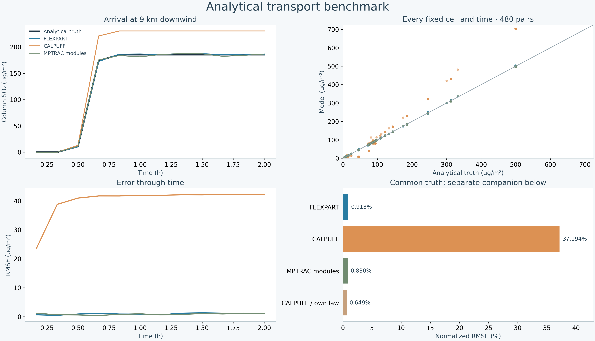

Three models.
One analytical reference.
Controlled advection and diffusion · no fitted parameters
FLEXPART: 0.913% · MPTRAC native modules: 0.830% · CALPUFF: 37.194% normalized RMSE against the same constant-K reference. CALPUFF uses a different finite-age dispersion law; its separate own-law error is 0.649%.

Prescribed experiment
Uniform wind 5 m/s; horizontal diffusivity 50 m²/s; continuous point source 1 g/s for 2 h. Flat terrain, zero background, no heat rise, chemistry or deposition. All 40 preselected cells × 12 ten-minute means are retained, including zero predictions. Each cell is 500 × 250 m. The observable is the vertically integrated SO₂ column, in µg/m².
Exact equation and independent reference
The Green function is exact. Its finite-cell, finite-time average is evaluated by independent controlled quadrature, without reading simulator output. Tightening quadrature tolerance from 10⁻⁸ to 10⁻¹⁰ changes no stored reference value; eight steady closed-form Bessel-function checks also pass.
Actual results
| Model / reference | RMSE · µg/m² | NRMSE | MAE · µg/m² | Max |error| · µg/m² |
|---|---|---|---|---|
| FLEXPART | 0.992081 | 0.913% | 0.471153 | 5.832156 |
| CALPUFF | 40.408301 | 37.194% | 15.468306 | 204.222104 |
| MPTRAC modules | 0.901686 | 0.830% | 0.429634 | 7.323566 |
| CALPUFF / own Draxler law* | 0.939104 | 0.649% | 0.438283 | 11.956146 |
*The last row has a different analytical target and is not a replacement score against the common reference.
Why CALPUFF has two scores
CALPUFF's declared Draxler spreading law approaches the same long-age diffusivity but differs from constant-K Brownian diffusion at finite age. Its own analytical companion differs from the common reference by 37.21%, explaining most of the 37.19% model discrepancy. This is primarily a closure difference, not evidence of a 37% implementation error. No closure coefficient was fitted to these results.
Native calculations and scope
- FLEXPART: reuse of the completed native run: 300,000 requested particles, 299,999 retained, 10 s sampling; actual runtime 70.06 s.
- CALPUFF: reuse of the completed unmodified CALMET → CALPUFF → CALPOST runs. Prescribed synthetic met and 8,000 quadrature receptors; actual stage runtimes 5.06 / 20.14 / 5.03 s.
- MPTRAC: new calls to its native advection and turbulent-diffusion modules; 300,000 parcels, 10 s steps, seed 42, stratified continuous births, and a matched cell/time observer. This is a module-level verification, not a run of the complete production driver. No substitute diffusion solver was used. Native calculation and collection took 4.09 s on four CPU threads; these unlike workflows are not a fair speed benchmark.
MPTRAC's constant-wind control is exact. Its one-step horizontal variances are 994.74 / 1007.93 m² against the theoretical 1000 m². The run retains all 7.2 kg emitted, with maximum inventory discrepancy 6.10×10⁻¹² kg, exact zero in the passive non-source tracer, and finite nonnegative column values.
Interpretation and reproducibility
One stochastic realization does not establish a ranking or particle-number convergence. Numerical observation operators differ: native FLEX bin/CIC support, CALPUFF spatial quadrature, and the MPTRAC rectangular observer. Their small errors include sampling, emission/time discretization and integration effects. The CALPUFF own-law score is also an aggregate residual, not a pure discretization-error estimate.
The source is at 6,000 m AGL; columns span 5,200–6,800 m. MPTRAC uses Kz=0.1 m²/s and retains its native vertical drift, with every parcel checked inside the column. FLEX remains at its passive release height; CALPUFF has a declared initial vertical Gaussian width. Vertical integration removes the dominant source-shape difference, subject to the original documented quadrature/truncation limits.
This verifies a simplified column observable. It does not establish accuracy for mountain winds, full 3D turbulence, heat rise, terrain collision, deposition or monitored ambient SO₂. The old successful results and all original failed engineering records remain unchanged. Compilation initially failed because the new harness used incorrect macro names; that pre-calculation failure is retained separately.
The MPTRAC harness links the existing native core with unchanged native kernels and inactive regional geometry hooks. Downloaded code here is our harness; it requires the existing local core/dependencies. Vendor CALPUFF code and executables are not redistributed.